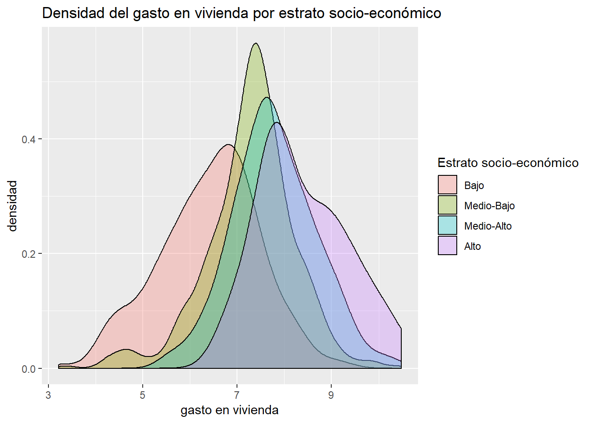
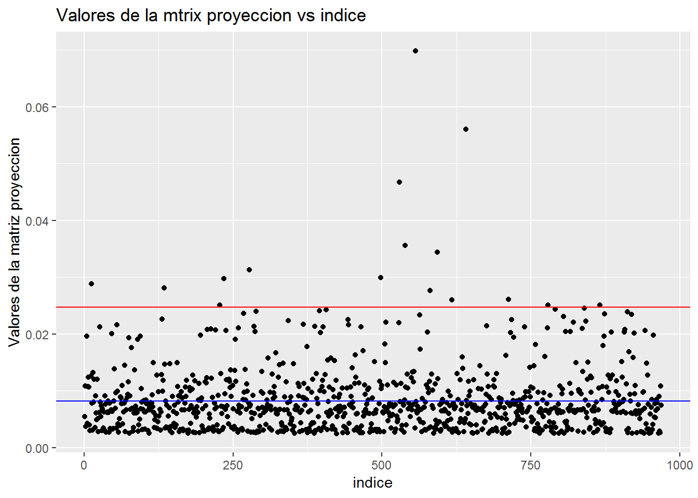
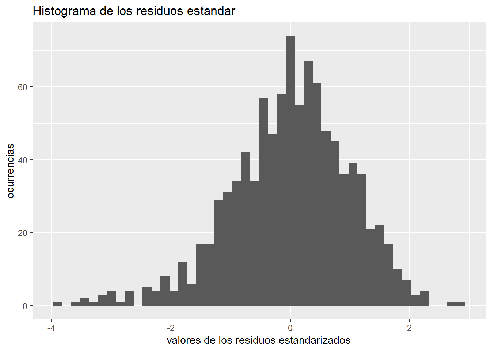
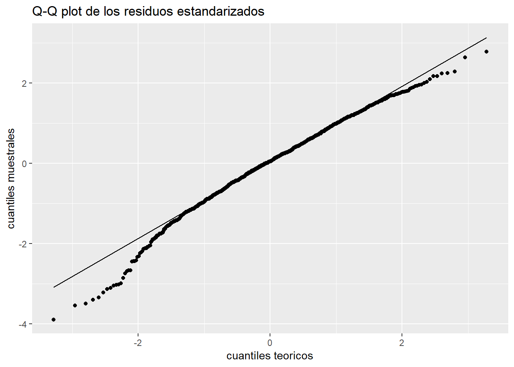

7 Analisis de residuales
El analisis de residuales es una herramienta que me ayudara a comprobar los supuestos que todo modelo de regresi?n lineal multiple (RLM) debe cumplir, esto para saber que la inferencia sobre los parametros del modelo es correcta y confiable. Los supuestos de RLM son:
Independencia de los errores \[ \ F_{\epsilon_{1},\epsilon_{2}\dots,\epsilon_{n}}(\epsilon_{1},\epsilon_{2},\dots,\epsilon_{n}) = F_{\epsilon_{1}}(\epsilon_{1}) F_{\epsilon_{2}}(\epsilon_{2})\dots F_{\epsilon_{n}}(\epsilon_{n}) \] donde F es la funcion de distribucion de las perturbaciones.
Linealidad en los par?metros : para cualquier combinacion de los valores de \(\ x_{i}\) se tiene que:
\[ \ E(\hat{\epsilon}|X) = 0 \] Esto es para que los estimadores de los efectos ceteris paribus sean insesgadosHomocedasticidad condicional : La varianza de los residuos, dados los parametros es constante, i.e:
\[ \ Var(\hat{\epsilon_{i}}|X) = \sigma_{\epsilon}^{2} \]
- Normalidad multivariada : Los residuos se distribuyen normal con media 0 y varianza constante, i.e:
\[ \hat{\epsilon} \sim {\sf }N(0,\sigma_{\epsilon}^{2}) \] Esto es para que los estimadores de los coeficientes de regresion sean eficientes (de minima varianza) y que los intervalos de confianza sean exactos.
- No existencia de multicolinealidad perfecta : Ninguna de las columnas de la matriz \(\ X\) (la matriz de diseno) es combinacion lineal del resto de las columnas, esto es: \[ \ |(X^{T}X)^{-1}| > 0 \] Esto se pide para que sea posible calcular los estimadores de los coeficientes de regresion, sin empargo, la Multicolinealidad imperfecta que es: \[ \ |(X^{T}X)^{-1}| \approx 0 \] que se presenta cuando existe una alta correlacion entre variables tambien representa un grave error en un modelo, ya que se “inflan” los errores estandar de los estimadores, lo cual genera una impresicion y “ensanchamiento” de los intervalos de confianza.
7.1 Tests graficos para comprobar los supuestos de regresion lineal multiple







7.2 Tests estadisticos para comprobar las hipotesis de regresion lineal multiple
Quiero comprobar que la esperanza de los residuos sea 0 , por lo que haré el siguiente contraste de hipotesis con una prueba t \[ \ H_{0} : E(\epsilon|X) = 0 \hspace{0.5cm} vs \hspace{0.5cm} H_{1}: E(\epsilon|X) \neq 0 \]
## [1] 1Como el P-value es mayor que el valor de significancia $ = 0.05 $ acepto la hipotesis nula de que los residuos tienen valor esperado 0.
Aplico la prueba de Durbin-Watson para detectar si el coeficiente de correlacion es 0 o distinto de cero, esto para verificar la independencia de los residuos, sus hipotesis son :
\[ \ H_{0} : \rho(i,i+1) = 0 \hspace{0.5cm} vs \hspace{0.5cm} H_{1}: \rho(i,i+1) \neq 0 \]
## lag Autocorrelation D-W Statistic p-value
## 1 0.01480526 1.968207 0.66
## Alternative hypothesis: rho != 0Como el P-value es mayor que el valor \(\alpha = 0.05\) entonces acepto la hipotesis nula de que el coeficiente de correlacion es 0.
Aplico la prueba de Breusch-Pagan, cuyas hipotesis a contrastar son : La varianza de los residuos es constante vs. la varianza de los residuos es una funcion de los valores ajustados del modelo. Esto es para verificar la homocedasticidad. \[ \ H_{0}: Var(\hat{\epsilon} |X) = \sigma_{\epsilon}^{2} \hspace{0.5cm} vs \hspace{0.5cm} H_{1}: Var(\hat{\epsilon} |X) = \sigma_{\epsilon}^{2}( \hat{Y}) \]
##
## studentized Breusch-Pagan test
##
## data: fitb
## BP = 5.9653, df = 7, p-value = 0.5438Como el P-value es mayor que $ = 0.05$ , por lo tanto no rechazo la hipotesis nula de una varianza constante.
Tambien proveo el resultado de la prueba de Goldfeld-Quandt, cuyas hipotesis son: La varianza es igual en un primer grupo de residuos que en un segundo grupo de residuos vs, la varianza en el primer grupo de residuo es es menor que la varianza en un segundo grupo (es decir, la varianza aumenta conforme crecen los valores ajustados del modelo)
\[ \ H_{0}: \sigma_{\epsilon_{1}}^{2} = \sigma_{\epsilon_{2}}^{2} \hspace{0.5cm} vs \hspace{0.5cm} H_{1}: \sigma_{\epsilon_{1}}^{2} < \sigma_{\epsilon_{2}}^{2}\]
##
## Goldfeld-Quandt test
##
## data: fitb
## GQ = 0.58906, df1 = 477, df2 = 476, p-value = 1
## alternative hypothesis: variance increases from segment 1 to 2Como el P-value es mayor que el valor de significancia \(\alpha = 0.05\) entonces no rechazo la hipotesis nula de que la varianza es igual en ambos segmentos
Proveo tambien el resultado de la prueba de Kolmogorov-Smirnov, cuyas hipotesis a contrastar son :
\[ H_{0}: \frac{\hat{\epsilon}}{\sqrt{S^{2}(1-h_{i})}} \sim N(0,1) \hspace{0.5cm} vs \hspace{0.5cm} \frac{\hat{\epsilon}}{\sqrt{S^{2}(1-h_{i})}} \nsim N(0,1) \hspace{0.5cm} \]
##
## One-sample Kolmogorov-Smirnov test
##
## data: resultados_fit$.std.resid
## D = 0.037732, p-value = 0.1267
## alternative hypothesis: two-sidedComo el P-value es mayor que el valor de significancia \(\alpha = 0.05\) entonces acepto la hipotesis nula de que los residuos estandarizados se distribuyan normal con parametros de media 0 y varianza 1.
La identificacion de la multicolinealidad no se puede hacer de forma tradicional en este modelo, ya que se incluye un termino cuadratico (la edad del jefe de familia al cuadrado) como regresor, por lo cual, para proveer evidencia de que no existe multicolinealidad entre los regresores, cree un modelo de regresion auxiliar donde excluyo el termino cuadratico. A continuacion presento los factores de inflacion de varianza (FIV) de esa regresion auxiliar.
Recordemos que los FIV se calculan en dos pasos, primero se crean i distintas regresiones por el m?todo de m?nimos cuadrados cuya variable explicada es \(\ X_{i}\) y los regresores son el resto de las variables, es decir
\[ \ x_{i} = \alpha_{0} + \alpha_{1}x_{1} + \dots + \alpha_{k}x_{k} + \epsilon \] Despues se calcula el FIV para cada coeficiente \(\hat{\beta_{i}}\) del modelo de regresion original (En nuestro caso es el modelo que no incluye el termino cuadratico) \[ \ FIV_{i} = \frac{1}{1-R^{2}_{i}} \] Donde \(\ R_{i}^{2}\) es el coeficiente de determinacion de la regresion cuya variable explicada es $ _{i}$ y sus regresores son el resto de las k variables explicativas.
Por lo general se dice que una variable aporta colinealidad al modelo si \(\ FIV(\hat{\beta_{i}}) > 10\) lo cual claramente no ocurre entre los regresores, por lo que podemos descartar la existencia de multicolinealidad ya que no existe evidencia suficiente en pro de esta.
## GVIF Df GVIF^(1/(2*Df))
## log(gasto_mon) 1.296543 1 1.138658
## edad_jefe 1.090427 1 1.044235
## sexo_jefe 1.037531 1 1.018593
## est_socio 1.226484 3 1.0346117.3 Identificacion de los valores influyentes
A continuaci?n presento una tabla cuyos metricas de residuo est?ndar y distancia de cook son aparentemente m?s grandes que el resto (residuo est?ndar > 3 & distancia de cook > 4 veces el promedio de la distancia de cook de los residuos), esto por que son potenciales observaciones extremas.
| count | .std.resid | .cooksd |
|---|---|---|
| 157 | -3.212012 | 0.0140883 |
| 506 | -3.026296 | 0.0173619 |
| 569 | -3.494389 | 0.0067647 |
| 698 | -3.125113 | 0.0088935 |
| 737 | -3.886520 | 0.0092244 |
| 846 | -3.098029 | 0.0183249 |
| 857 | -3.540299 | 0.0102776 |